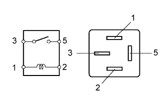
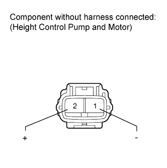

DTC C1766 Height Control Pump Motor Current |
| DTC Code | Detection Condition | Trouble Area |
| C1766 | When the height control pump and motor operates continuously for 135 seconds. |
|
| 1.INSPECT FOR FLUID LEAK |
Inspect for fluid leaks (Click here).
|
| ||||
| OK | |
| 2.PERFORM ACTIVE TEST USING INTELLIGENT TESTER (LEVELING VALVE, ACCUMULATOR VALVE AND GATE VALVE) |
Connect the intelligent tester to the DLC3.
Start the engine and turn the tester on.
Select the Active Test mode on the intelligent tester.
Check the operation of the leveling valve solenoid, accumulator valve solenoid and gate valve solenoid when operating the solenoid with the intelligent tester.
| Tester Display | Test Part | Control Range | Diagnostic Note |
| Front Right Height Solenoid | Front height control solenoid valve RH | ON or OFF | Operation of solenoid can be heard. |
| Front Left Height Solenoid | Front height control solenoid valve LH | ON or OFF | Operation of solenoid can be heard. |
| Rear Right Height Solenoid | Rear height control solenoid valve RH | ON or OFF | Operation of solenoid can be heard. |
| Rear Left Height Solenoid | Rear height control solenoid valve LH | ON or OFF | Operation of solenoid can be heard. |
| Accumulator Valve | Accumulator solenoid valve | ON or OFF | Operation of solenoid can be heard. |
| Front Gate Valve | Front gate solenoid valve | ON or OFF | When the Front Gate Valve item of the Active Test is operated, the Front Gate Valve item of the Data List changes to ON/OFF. |
| Rear Gate Valve | Rear gate solenoid valve | ON or OFF | When the Rear Gate Valve item of the Active Test is operated, the Rear Gate Valve item of the Data List changes to ON/OFF. |
|
| ||||
| OK | |
| 3.INSPECT SUSPENSION CONTROL RELAY (AHC) |
 |
Remove the suspension control relay from the engine room relay block.
Measure the resistance according to the value(s) in the table below.
| Tester Connection | Condition | Specified Condition |
| 3 - 5 | Battery voltage is not applied to terminal 1 and 2 | 10 kΩ or higher |
| Battery voltage is applied to terminal 1 and 2 | Below 1 Ω |
|
| ||||
| OK | |
| 4.CHECK HEIGHT CONTROL PUMP AND MOTOR |
Remove the height control pump and motor (Click here).
Inspect if the compressor is stuck.
 |
Apply battery voltage to the compressor motor and check the operation of the motor.
| Measurement Condition | Specified Condition |
| Battery positive (+) → Terminal 2 Battery negative (-) → Terminal 1 | Motor operates |
|
| ||||
| OK | |
| 5.INSPECT FLUID LINE |
Check if the fluid line is clogged.
|
| ||||
| OK | ||
| ||